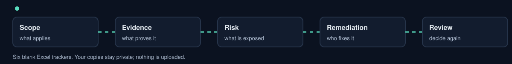
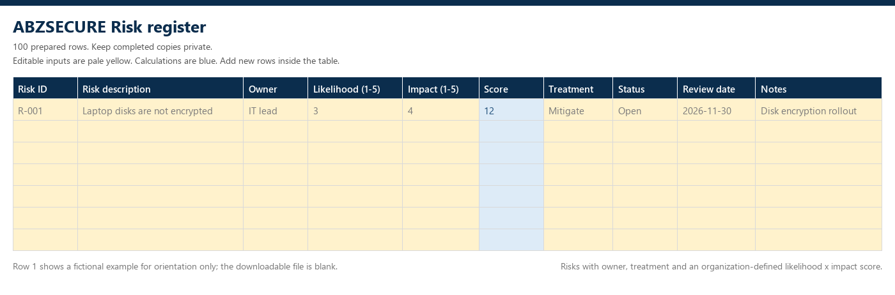
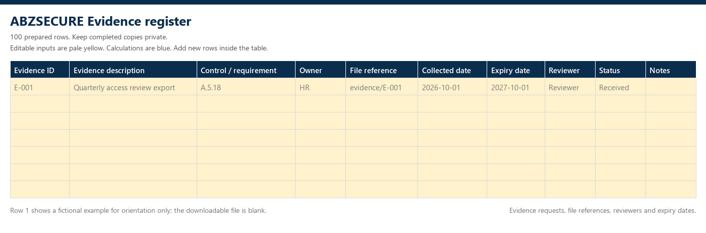
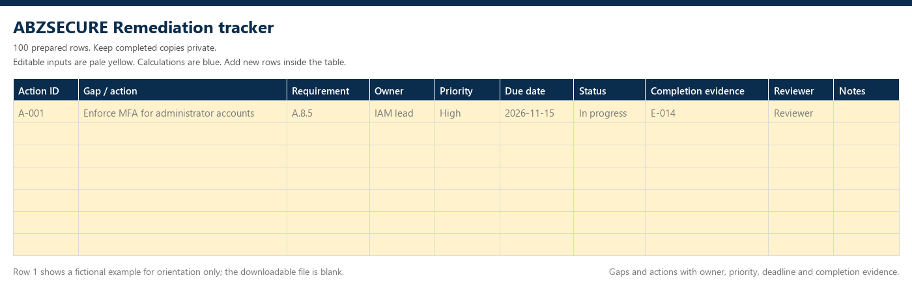
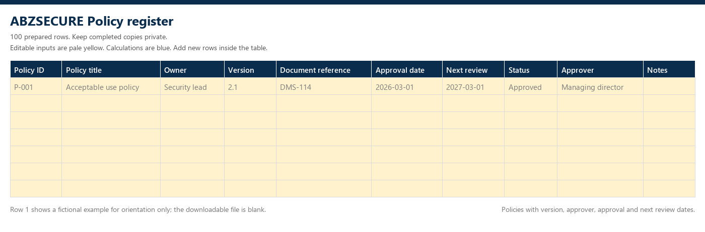
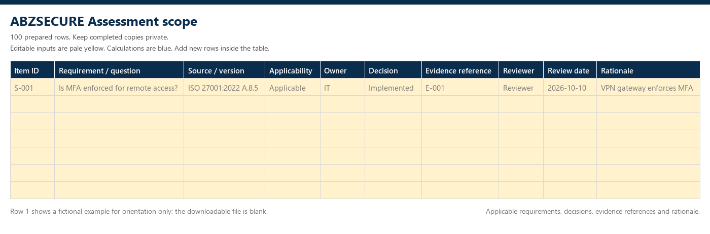
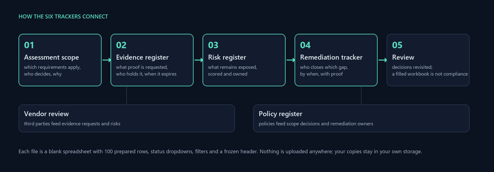

GOVERNANCE · RISK · COMPLIANCE
Risk, evidence, remediation, vendors, policies and assessment scope. Each file has 100 prepared rows, status dropdowns, filters and a frozen header. No macros, no sign-up, nothing uploaded: download, fill the pale-yellow cells and keep your copy in your own storage.


DOWNLOAD .XLSXRisk registerRisks with owner, treatment and an organization-defined likelihood x impact score.Risk ID · Risk description · Owner · Likelihood (1-5) · Impact (1-5) · Score · Treatment · Status · Review date · Notes
DOWNLOAD .XLSXEvidence registerEvidence requests, file references, reviewers and expiry dates.Evidence ID · Evidence description · Control / requirement · Owner · File reference · Collected date · Expiry date · Reviewer · Status · Notes
DOWNLOAD .XLSXRemediation trackerGaps and actions with owner, priority, deadline and completion evidence.Action ID · Gap / action · Requirement · Owner · Priority · Due date · Status · Completion evidence · Reviewer · Notes DOWNLOAD .XLSXVendor reviewThird-party due diligence, data handled and follow-up actions.Vendor ID · Vendor name · Service · Data handled · Business owner · Review due · Status · Review evidence · Follow-up action · Notes
DOWNLOAD .XLSXPolicy registerPolicies with version, approver, approval and next review dates.Policy ID · Policy title · Owner · Version · Document reference · Approval date · Next review · Status · Approver · Notes
DOWNLOAD .XLSXAssessment scopeApplicable requirements, decisions, evidence references and rationale.Item ID · Requirement / question · Source / version · Applicability · Owner · Decision · Evidence reference · Reviewer · Review date · Rationale